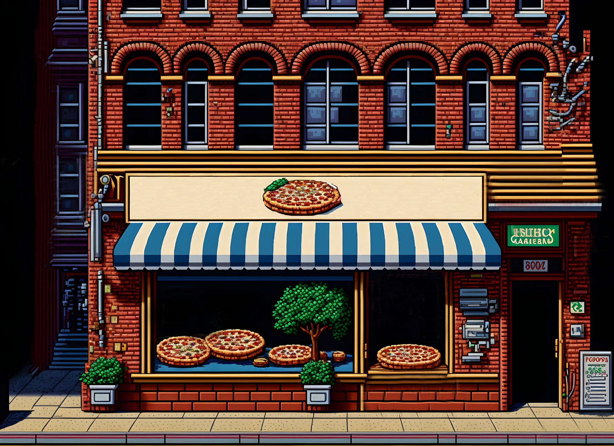

quem somos
Conheça mais sobre a história da Pizza delivery

A história da pizza começou com os egípcios. Alguns acreditam que eles foram os primeiros a
misturar farinha com água. Outros afirmam que os pioneiros foram os gregos, que faziam as massas
à base de farinha de trigo, arroz ou grão-de-bico e as assavam em tijolos quentes.
A novidade foi parar na Etrúria, região da Itália antiga. Ao contrário do conhecimento
popular, apesar de tipicamente italiana, os babilônios, os hebreus e os egípcios já
misturavam o trigo, o amido e a água para assar em fornos rústicos há mais de 5.000 anos. Já
a história da Pizza delivery baseia-se no encontro da harmonização dos ingredientes, no preparo
do molho e na fabricação da massa, tudo feito com produtos de qualidade, que, juntos, formam
o melhor sabor. A Pizza delivery começou em fevereiro de 1998 com uma nova ideia: sabores
famosos! Com o tempo, fomos direcionados para pizzas famosas! E hoje temos orgulho dos
clientes famosos: VOCÊ!
CONTATO
FALE CONOSCO AGORA MESMO PELO FORMULÁRIO A BAIXO